Additional fine-band proposals Native crop pixels unresized; browser zoom100%. Both fine cab families become visible with conspicuous periodic purple/green colour. Exact-GT constructed controls and all error costs remain; real ISO100/AHD and JPEGs are independent qualitative references, not exact GT. All0/2/4 controls retained.
matched/iso6400-index0000-role2-comparison.png matched/iso6400-index0008-role2-comparison.png matched/iso6400-index0016-role2-comparison.png matched/iso6400-index0024-role2-comparison.png matched/iso1600-index0000-role2-comparison.png 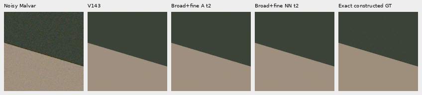
matched/iso1600-index0008-role2-comparison.png matched/iso1600-index0016-role2-comparison.png matched/iso1600-index0024-role2-comparison.png matched/iso400-index0000-role2-comparison.png matched/iso400-index0008-role2-comparison.png matched/iso400-index0016-role2-comparison.png matched/iso400-index0024-role2-comparison.png matched/bark-RGGB-draw0-comparison.png 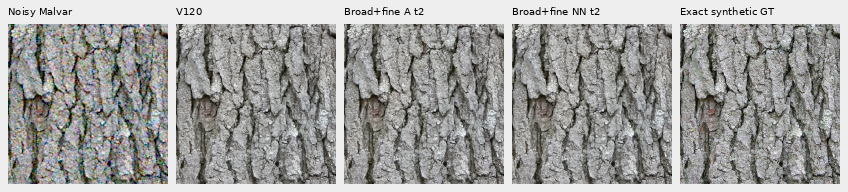
matched/raccoon-fur-RGGB-draw0-comparison.png 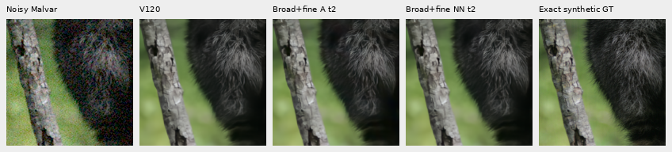
matched/main-overcast-sky-comparison.png matched/main-building-detail-comparison.png matched/main-foliage-comparison.png matched/main-chain-link-fence-comparison.png matched/mesh-nominal-fine-green-mesh-left-comparison.png 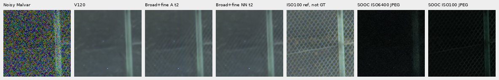
matched/mesh-nominal-fine-green-mesh-right-comparison.png 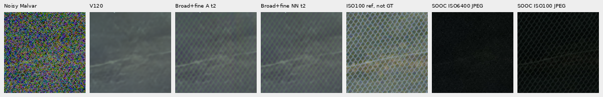
matched/mesh-profile3879-fine-green-mesh-left-comparison.png 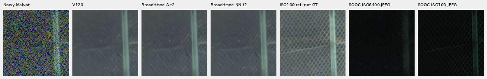
matched/mesh-profile3879-fine-green-mesh-right-comparison.png stress/main-overcast-sky-stress.png stress/main-building-detail-stress.png 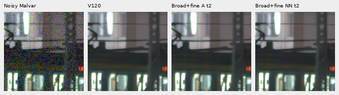
stress/main-foliage-stress.png stress/main-chain-link-fence-stress.png 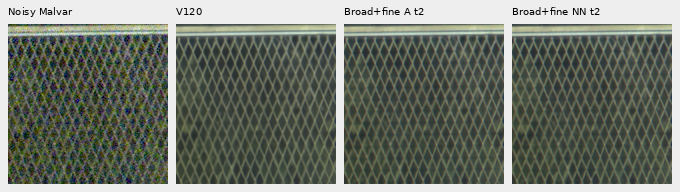
stress/mesh-nominal-stress.png 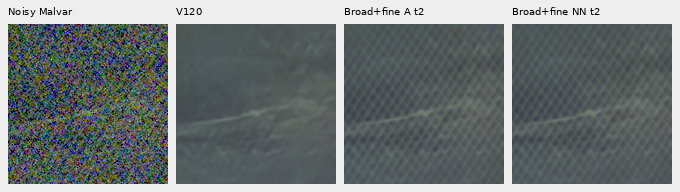
stress/mesh-profile3879-stress.png stress/main-building-analytic-max.png stress/main-building-historical-failure.png triplets/iso400-index0008-role2-triplet.png triplets/iso400-index0024-role2-triplet.png 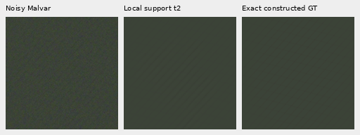
triplets/iso400-index0008-role2-analytic-triplet.png 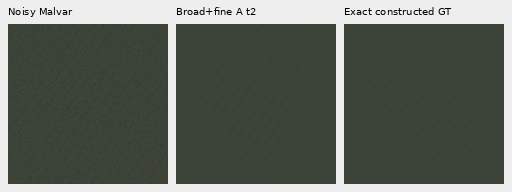
triplets/iso400-index0024-role2-analytic-triplet.png 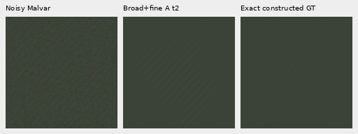
paired/iso400-index0008-role2-paired.png 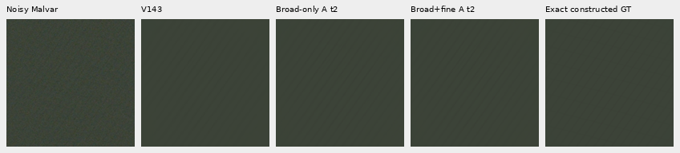
paired/iso400-index0024-role2-paired.png plots/quiet-tradeoff.png 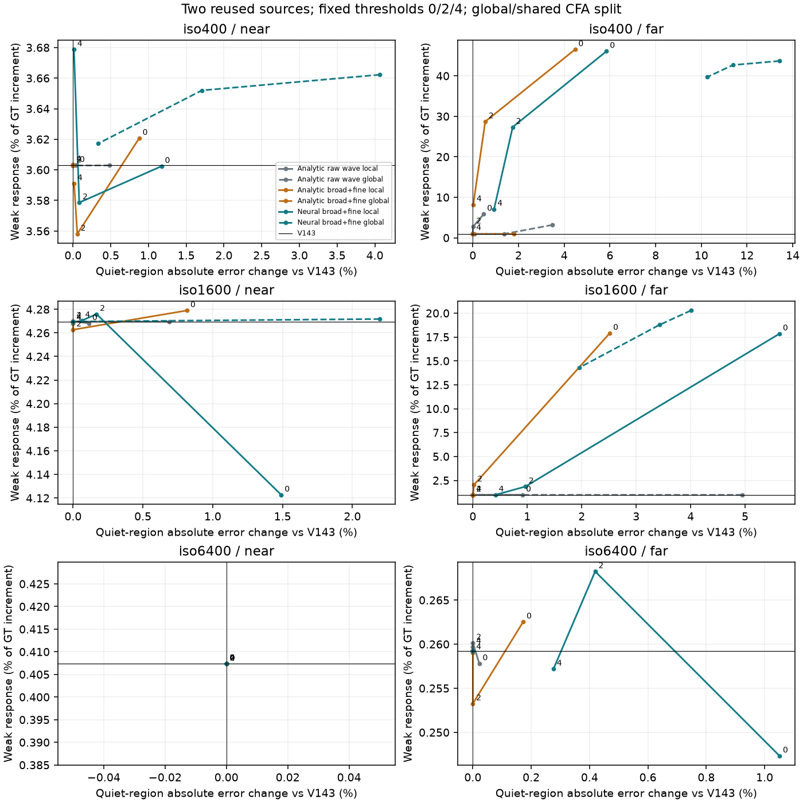
plots/increment-tradeoff.png 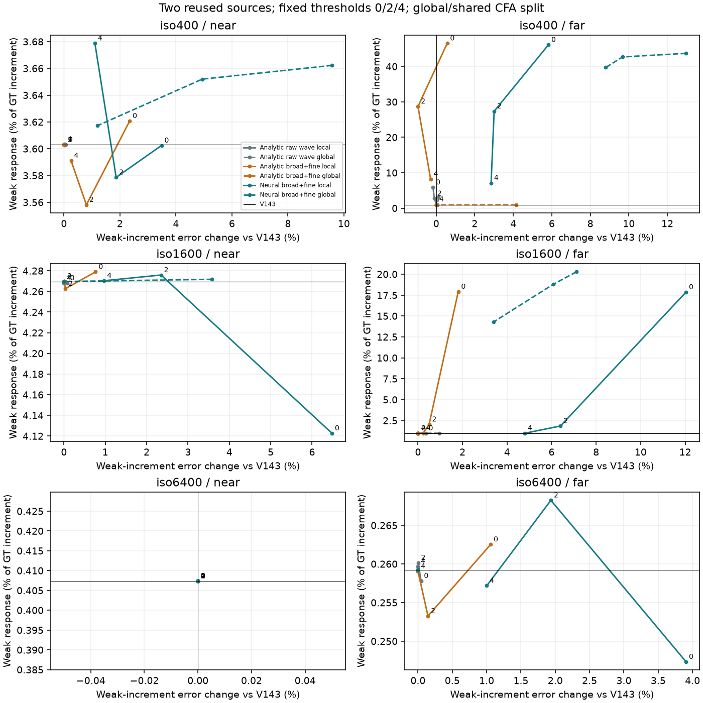
cab-before-after/mesh-nominal-left-before-after.png 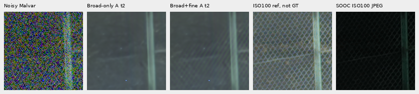
cab-before-after/mesh-nominal-right-before-after.png cab-before-after/mesh-profile3879-left-before-after.png 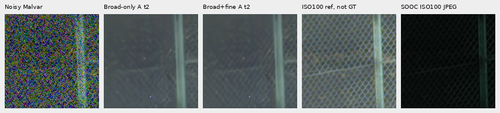
cab-before-after/mesh-profile3879-right-before-after.png 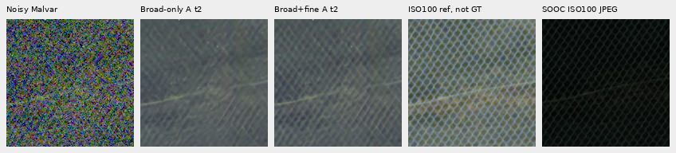
triplets/iso1600-index0008-role2-analytic-triplet.png 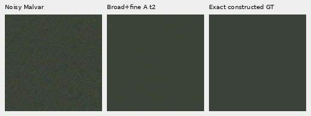
triplets/iso1600-index0024-role2-analytic-triplet.png 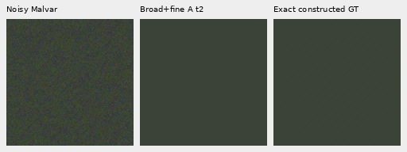